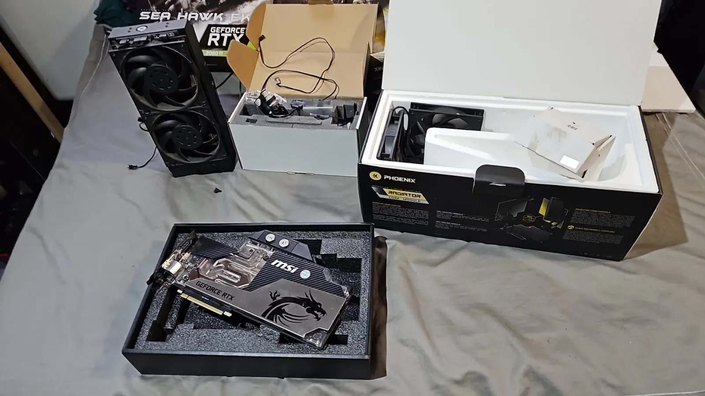

Something wrong with your PC? Let’s figure it out.
Won’t start? Crashing? Running hot? Acting strangely? Tell us what’s happening and we’ll help find the cause before money gets thrown at the wrong fix.

What’s your PC doing?
Tap the closest match. You don’t need to know the technical name for the problem.
Power, RAM, storage, graphics and Windows can all cause similar startup symptoms. We narrow it down before replacing anything.
Carry this into Signal Scan →Repair without the parts cannon.
The goal is simple: work out what’s actually wrong, explain it clearly, then fix the right thing.
No power, no display, failed startup, restart loops and other problems that stop the PC from getting going.
Blue screens, freezing, random restarts and game crashes that can come from RAM, drivers, power or hardware faults.
High temperatures, loud fans, throttling and shutdowns caused by dust, airflow or cooling problems.
Corruption, startup errors, failing drives and software issues that can look like hardware faults.
A clear path from symptom to next step.
Send a message or run Signal Scan so we know where to start.
We test the likely problem areas instead of guessing from the symptom.
We explain the fix and any parts needed before extra costs are added.
Clear answers before expensive fixes.
We don’t start by replacing parts.
A crashing game could be heat, RAM, drivers, storage or power. If a simple fix is enough, we’ll tell you. If hardware really does need replacing, you’ll know why.
Based in northern Pretoria
VoltTech serves Wonderboom, Pretoria North, Sinoville, Annlin, Montana and surrounding areas. Remote help may suit some software or creator-tech work. Courier-in work is available only for eligible jobs by prior arrangement; packing, courier method and any charges are confirmed before equipment is sent.
Common questions
Do you repair laptops too?
Yes. We can diagnose both desktops and laptops, although some laptop repairs depend on the type of fault and whether parts are available.
Can you give me a price before seeing the PC?
Signal Scan can give you a useful starting estimate. Some hardware faults still need hands-on diagnosis before a final quote is possible.
Will you replace parts without asking me?
No. If a replacement part is needed, the part and cost are confirmed with you before the work goes ahead.
Not sure what’s wrong?
Answer a few quick questions in Signal Scan, or send us the symptoms directly.